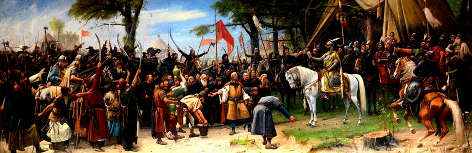
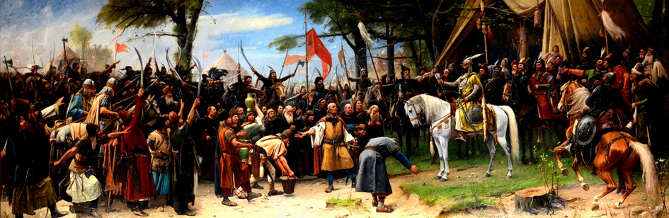

A Honfoglalás Menete
375 - A hunok egyes elemei túlélhették a népvándorlások viharait, és megmaradhattak a Kárpát-medencében; a néphiedelem (valószínűleg tévesen) tőlük származtatja a székelyeket, Csaba magyarjait. A hun nyelvről, írásbeliségről keveset tudunk, valamilyen türk nyelvet beszélhettek, több más nyelv mellett.
568 - korai avarok, másnéven várkonyok Nyelvükről keveset tudunk, valószínűleg valamilyen türk nyelvet beszélhettek, szintén több más nyelv mellett (gepida, alán, szarmata stb). Makkay szerint a várkonyokkal jöhettek be a mezőségi magyarok és a csángók ősei.
670 - kései avarok, másnéven onogurok. László Gyula és Makkay János szerint az onogur-bolgár beköltözőkkel együtt jelentős 'finnugor' (=magyar) elem érkezett a Kárpát-medencébe. Ez a kettős honfoglalás elmélete, amit a tudósok nagy többsége helytelennnek tart. Az onogur-magyar társadalomban osztálytagolódás volt: a vezető réteg türk nyelven, míg a köznép magyarul beszélt. Hozzájuk kötődik a jelentős griffes-indás kultúra. A világ népei számára magyart jelentő "Hungarus" elnevezés is az onogurból származik. Makkay szerint a székelyek ősei az onogurokkal jöhettek be. Szerinte az onogur-avarok utolsó királyát Attilának hívták, az ő halálával esett Avarország zűrzavarba 795 tájékán.
860-895 - A honfoglalók fokozatos bejövetele. László Gyula és Makkay János szerint törökös nyelvük volt, és az itt található onogur-magyar tömegek fokozatosan asszimilálták őket. A magyar nyelvben sok török jövevényszó található; ezek származhatnak a honfoglalóktól, de föntebb tárgyalt népektől is.
Végül pedig laktak itt szórványosan szlávok is, főleg az avar/magyar nyelvterület határain. Több földműveléssel kapcsolatos magyar szó szláv eredetű vagy közvetítésű. Az 5. század óta az eurázsiai sztyeppén a keletről nyugatra mozgás volt a jellemző. Ez hozta a hunokat, avarokat, onogurokat és a magyarokat is Európába, végül törvényszerűen mind a Kárpát-medence területén jutottak a legnyugatabbra.
A hadászati tényezőkön túl a népek, így a magyar honfoglalást megelőzően a besenyők és úzok nyugatra vonulásának gazdasági okai is lehettek, nevezetesen a legelők megfogyatkozása, amit előidézhetett a szárazabb vagy hidegebb éghajlat, vagy a sikeres állattenyésztés nyomán bekövetkezett demográfiai robbanás is, végeredményben mindkét esetben a relatív túlnépesedés.
A Kárpát-medencét többé-kevésbé birtokba vették (a hegyeket és erdőket jó darabig érintetlenül hagyták), de a terület az eddig megszokotthoz képest szűkebb volt, ami lassan letelepedésre késztette az embereket. A kalandozások, amelyeknek célja már nem a hódítás, hanem a zsákmányszerzés valamint a nyugati hatalmak katonai erőinek lekötése volt, segítettek a nemzetségek közti feszültségek csillapításában. Egész Európát bejárták, szokatlan harcmodorukkal kezdetben hatalmas sikereket aratva. Viszont a könnyűlovasság, amivel a magyarság rendelkezett, hosszú távon nem tudta felvenni a harcot a nehézpáncélba öltözött ellenfelekkel és a hatalmas, kőből épült várakkal (utóbbiak léte legalábbis kétséges). Néhány kisebb vereség már a 930-as évek során jelezte a szerencse megfordulását, de a súlyos csapás 955-ben, Augsburgnál következett be, ahol a megtámadott tartományok egyesített seregeivel találták szembe magukat. Ez nem csak nagy emberveszteséget, de egy korszak alkonyát is jelentette (Lásd: gyászmagyarok). A kalandozások egy ideig déli irányba még folytatódtak, de 970-re a bizánciaktól elszenvedett vereségek is túl nagynak bizonyultak. Ekkor indította és véreztette el vegyes felállású, orosz-bolgár-besenyő-magyar seregét Szvjatoszlav kijevi fejedelem. Habár a hadjáratot nem önállóan indították eleink, a hagyományos szakirodalom többnyire az arkadiopoliszi csatát tartja a kalandozások záró ütközetének. Egyre nyilvánvalóbb lett, hogy a magyarság előtt két út áll: vagy megszűnnek mint államalkotó tényező (lásd hunok, gepidák, avarok), vagy a Kárpát-medencén belül viszonylag szilárd helyzetet teremtenek, ahol megjelenhetnek az államiság első nyomai, kialakulhat az államszervezet. Árpád és dédunokája, Géza a hagyományosan nagyfejedelem formában fordított titulussal fordul elő egy görög és egy latin nyelvű forrásban, ezért feltételezett országukat Magyar Nagyfejedelemség néven is szokás említeni. A 9. század végén a Kárpát-medencébe költöző Magyar Fejedelemség - és a feltételezhető többi magyar fejedelemség - a Hun Birodalom, majd az Avar Kaganátus örökébe lépve a közép-európai steppe birodalmak sorát zárja le, amik a nem-római típusú államiságot képviselték a térség népvándorláskori történelmében.
 

Katt az oldal elejéhez--->A Honfoglalás Menete